Configurar los métodos de pago agregando la forma y método de pago para cada uno, requerido para timbrado desde el POS gráfico.
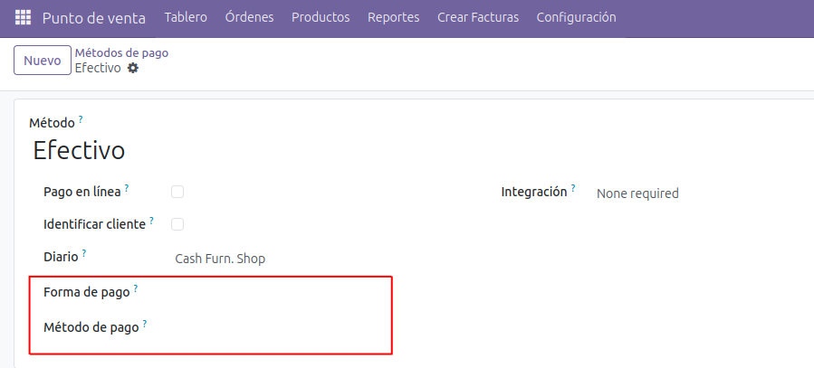
Configuración opcional para creación de facturas globales.
- Crear notas de crédito en devoluciones: Si no se habilita pedidos de devolución y los pedidos que lo originan no se agregan a la factura global. Si se habilita se agrega el pedido origen de la devolución a la factura global y adicionalmente se crea una nota de crédito por la devolución.
- Utilizar códigos de ticket en FG. Si no se habilita se utiliza el número de recibo en la creación de la factura global. Si se habilita se utiliza el código del ticket para la factura global.
- No cambiar cliente del recibo al hacer factura global. Si no se habilita al crear la factura global a los pedidos que lo componen se le coloca el cliente utilizado para la factura global. Si se habilita no cambia el cliente de los pedidos al generar la factura global.
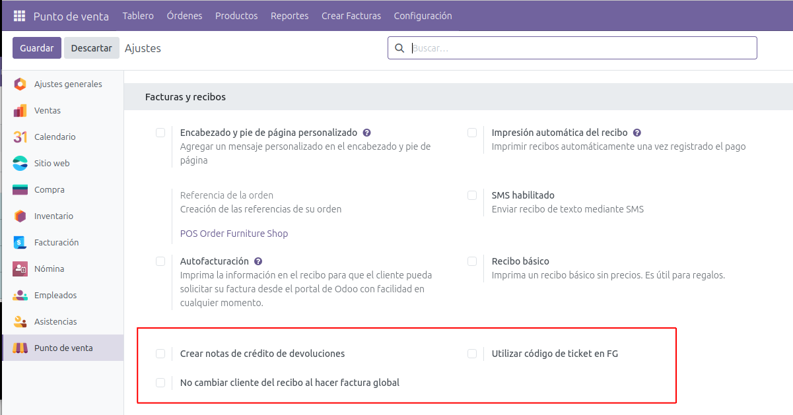
Creación de facturas globales
Hay dos formas de generar las facturas globales.
- En el menú principal del módulo de punto de venta se pueden crear facturas globales utilizando distintos filtros.
- Selecionando múltiples pedidos para generar la factura global.
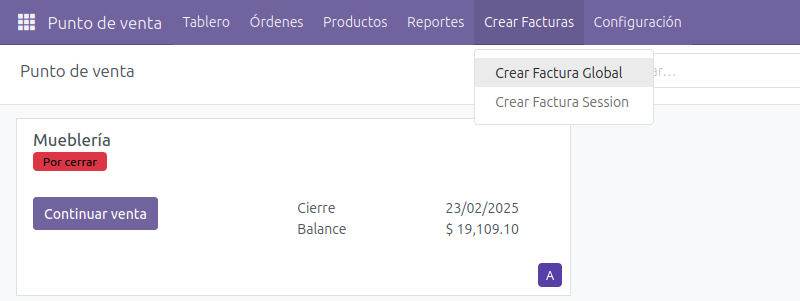
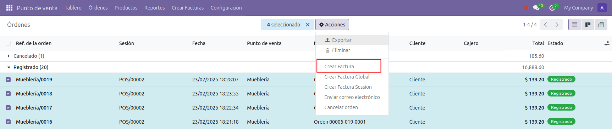
Crear factura global
Se pueden generar facturas globales filtrando los pedidos por medio de fechas.
Adiiconalemnete se pueden filtrar los pedidos por punto de venta, método de pago y seleccionar un monto máximo para la factura global.
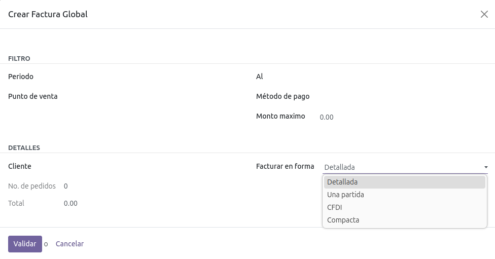
Crear factura sesión
Se pueden generar facturas globales filtrando por sesión.
Adiiconalemnete se pueden filtrar los pedidos por método de pago y seleccionar un monto máximo para la factura global.
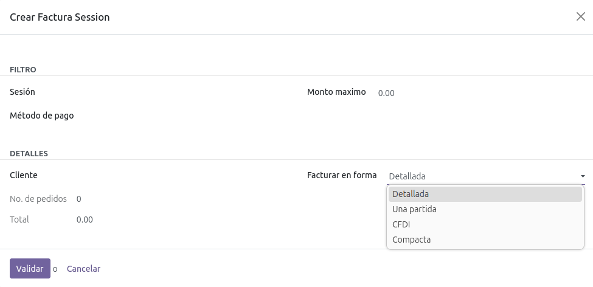
"Facturar en forma"
Se puede seleccionar distintas formas de como se va a generar la factura global.
- Detalladas. Agrega todas las líneas de los pedidos en la factura global.
- Una partida. La factura global solo va a tener un línea con el monto total de los pedidos.
- CFDI. Se crea una línea por cada pedido en la factura global, según el anexo 20 del SAT.
- Compacta. Similar a la detallada pero agrupa los productos similares en una misma línea.
Las facturas globales se generan en un modelo nuevo el cual es similar a las facturas del sistema.
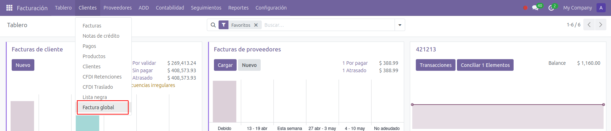
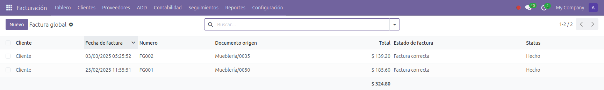
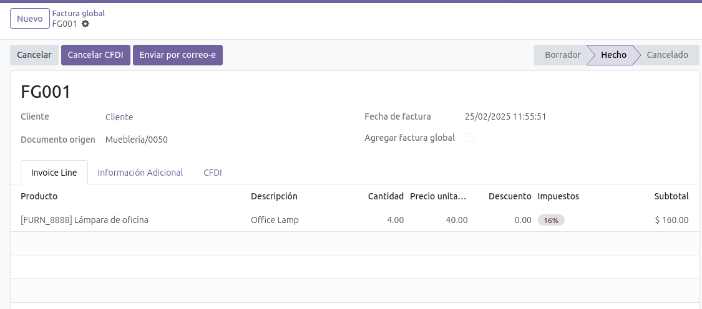
Timbrado desde punto de venta gráfico
Al realizar el pago se debe:>
- Seleccionar un cliente que esté configurado con correo electrónico, RFC y régimen fiscal
- Habilitar la opción de "Facturación"
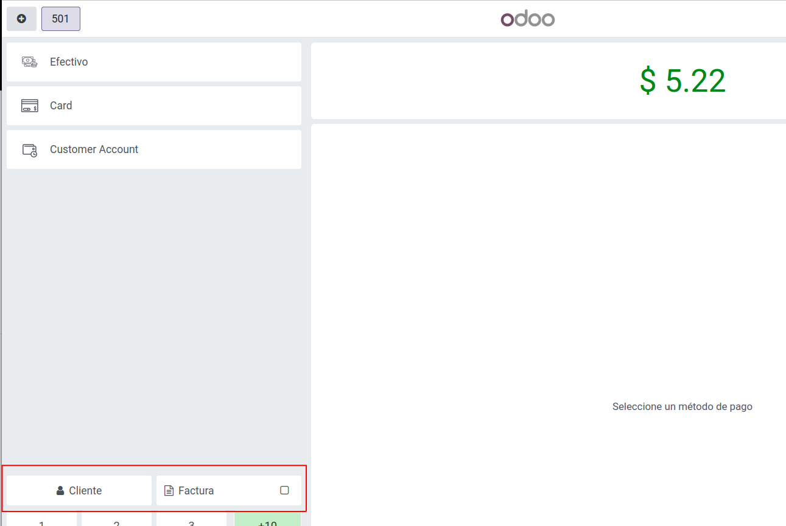
Al seleccionar la opción de facturación aparece una ventana emergente donde se debe seleccionar el uso de CFDI.
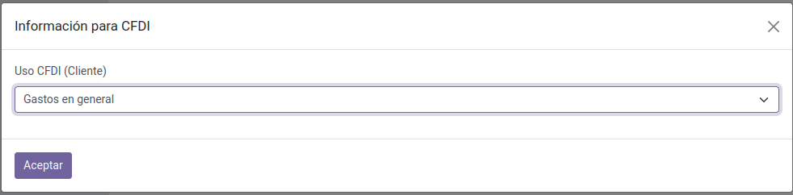
Al avanzar con el pago se timbra el pedido, en el ticket agrega la información fiscal y se envía un correo con la factura y XML generado.
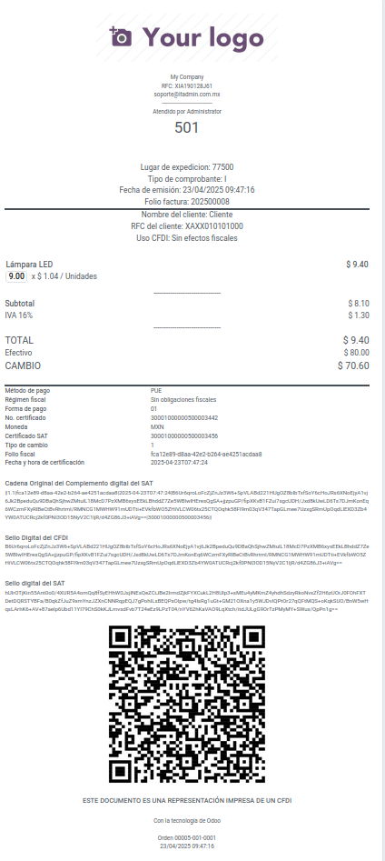